<div class="bg-bluedark w-full min-h-screen flex flex-col xl:flex-row">
  <div class="fixed z-10 flex items-center justify-between bg-bluesemi rounded-b-2xl py-6 px-6 w-full xl:w-auto xl:flex-col xl:justify-normal
    xl:ml-6 xl:py-8 xl:my-8 xl:h-[960px] xl:rounded-2xl xl:space-y-12 xl:space-x-0 ">
    
    <div class="flex space-x-10 xl:flex-col xl:space-y-10 xl:space-x-0">
      <div routerLink="/home" (click)="homeOn(); movieOff(); tvOff(); bookmarkedOff()">
        
        
      </div>
      <div routerLink="/movies" (click)="movieOn(); homeOff(); tvOff(); bookmarkedOff()">
        
        
      </div>
      <div routerLink="/tv" (click)="tvOn(); homeOff(); movieOff(); bookmarkedOff()">
        
        
      </div>
      <div routerLink="bookmarked" (click)="bookmarkedOn(); homeOff(); movieOff(); tvOff()" class="flex justify-center">
        
        
      </div>
    </div>
    <div class="hidden spacer xl:block"></div>
    
  </div>
  <div class="py-6 my-6 w-auto xl:w-[90%] xl:ml-36">
    <router-outlet></router-outlet>
  </div>
</div>


